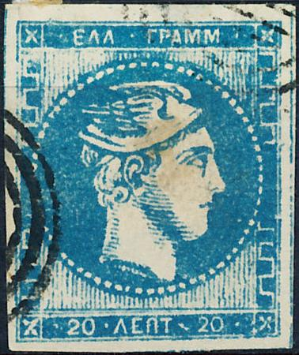
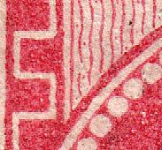
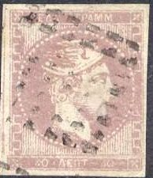
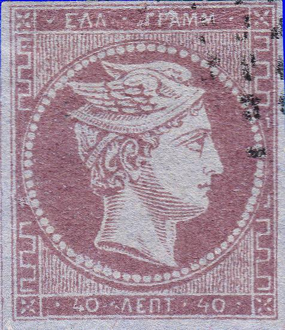
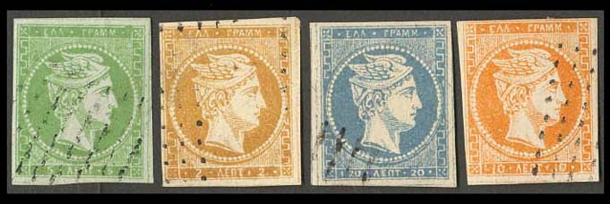
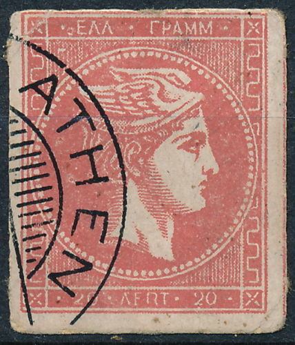

{kind=link}

Return To Catalogue - Greece - Greece Large Hermes Head forgeries, part 2; Oneglia and Sperati - Greece Large Hermes Head forgeries, part 3; Fournier - Greece Large Hermes Head forgeries, part 4; Imperato
Note: on my website many of the
pictures can not be seen! They are of course present in the
catalogue;
contact me if you want to purchase the catalogue.
The genuine stamps should have 88 large pearls in the circle, all of the same size. The second line in the upper left corner design (the first wavy line) should have a break near the bottom in all genuine stamps.

The book 'Die Postwertzeichen von Griechenland' by A.E.Glasewald (1896) mentions that the first badly done forgeries appeared in the 1870's. He is probably referring to the Spiro forgeries shown next.


Even tete-beche forgeries exist of this type.
The above forgery has only 66 irregular small pearls in the circle. The face looks quite different from a genuine stamp. The background behind the circle is composed of straight lines, instead of wavy lines. This forgery is the second forgery described in Album Weeds. It was made by Spiro. I have seen a whole sheet (5x3) of the 40 l red values and another sheet with 25 stamps (5x5) of the 5 l green value. I've seen the 2 l in a much yellower shade of brown. This forgery appeared in the 1860's. It is usually cancelled with a pattern of lines or a square of dots.
A typical Spiro sheet with 25 forgeries and bogus cancels. I've
seen a similar sheet of the 5 l value.
The Spiro brothers usually printed their forgeries in sheets of
25, but here some sheets with only 15 stamps...
Album Weeds describes another forgery with 75 pearls in the circle, which must be the next forgeries:



In my view, there is too much space between the circle and the
left outer frameline. The eyes are looking too much 'upwards'.


Front and backside of a 5 l, 10 l, 40 l and a 80 l forgery
Some sources claim that these forgeries were also made by Spiro, but they appear to sophisticated to me so I have my doubt that these were actually produced by Spiro. They usually appear to be cancelled with a pattern of dots.

A 'misprint' forgery 20 l blue with a "5" printed at
the back.
Are the following forgeries made by the same forger?


(Forgeries, the pearls are not uniformly done)

Most other forgeries (even the above ones) are rather deceptive.
Other forgeries:

This forgery (30 l) doesn't have any horizontal dots in the
background outside the circle.
Some other primitive forgeries (many details are wrong upon closer inspection of these forgeries):


Some kind of cut from a postcard? I've seen another stamp with
the same cancel placed at the same location.

Another cut from a postcard? I doubt the cancel "ATHEN"
was used in Greece. Moreover, this cancel always appears in
exactly the same location.

Another very primitive stamp, probably not even intended to be a
forgery.


Rather badly done forgery, there is a line through the pearls on
the left hand side. Apparently this is a postal forgery from 1881
this to defraud the Post Office in Syros and in Aghia Anna. The
forger got arrested, no used copies are known.
Greece Large Hermes Head
forgeries, part 2; Alisaffi, Oneglia and Sperati
Greece Large Hermes Head forgeries, part
3; Fournier
Greece Large Hermes Head forgeries, part
4; Imperato
{kind=link}
{kind=link}